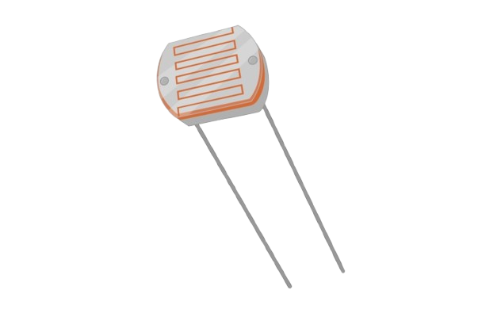

LDR (Light Dependent Resistor) adalah sensor yang nilai resistansinya berubah sesuai intensitas cahaya yang diterima. Semakin terang cahaya, nilai resistansi semakin kecil. Semakin gelap, nilai resistansi semakin besar.
| Pin | Fungsi |
|---|---|
| VCC | Memberikan catu daya 5V |
| OUT/A0 | Keluaran Analog |
| GND | Ground |
| HC-SR04 | Arduino |
|---|---|
| VCC | 5V |
| GND | GND |
| OUT/AO | A0 |
Klik tombol berikut untuk mencoba simulasi HC-SR04.
Jalankan SimulasiSaat intensitas cahaya meningkat, nilai yang dibaca Arduino akan berubah. Sensor LDR banyak digunakan pada lampu otomatis, sistem pencahayaan, dan perangkat berbasis IoT.